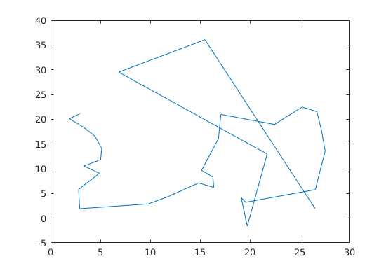
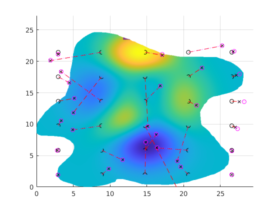
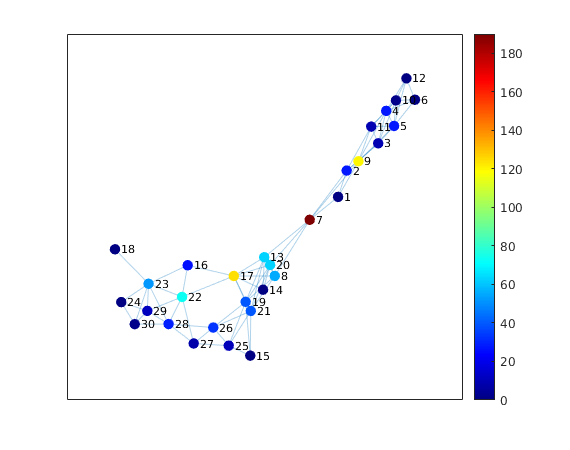
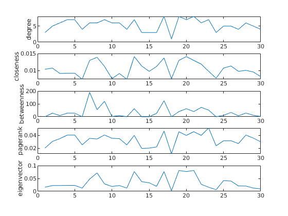
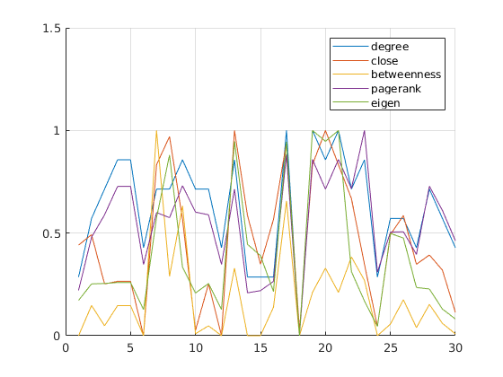
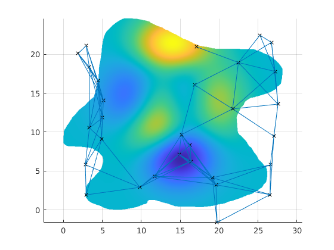

Contents
addpath('./ACO')
addpath('./MILP')
poc_path_planner
node = [airPosX(~isnan(airPosZ(:))),airPosY(~isnan(airPosZ(:))),airPosZ(~isnan(airPosZ(:)))];
N = size(node,1);
A = zeros(N,N);
C = zeros(N,N);
L = zeros(N,N);
for i = 1:N
for j = 1:N
L(i,j) = distance(node(i,:), node(j,:));
end
end
Elapsed time is 0.001960 seconds.
Elapsed time is 0.000957 seconds.
 
Build Network
conThres = 8.2;
for i = 1:N
for j = 1:N
if i~=j
if L(i,j) < conThres
A(i,j) = 1;
C(i,j) = L(i,j);
end
else
A(i,j) = 0;
end
end
end
figure(5)
G = graph(C);
degree = centrality(G,'degree');
closeness = centrality(G,'closeness');
betweenness = centrality(G,'betweenness');
pagerank = centrality(G,'pagerank');
eigenvector = centrality(G,'eigenvector');
p = plot(G,'Layout','force','EdgeAlpha',0.3,'MarkerSize',7);
p.NodeCData = betweenness;
colormap jet
colorbar
figure(6)
clf
subplot(5,1,1)
grid on
plot(degree)
ylabel('degree')
subplot(5,1,2)
grid on
plot(closeness)
ylabel('closeness')
subplot(5,1,3)
grid on
plot(betweenness)
ylabel('betweenness')
subplot(5,1,4)
grid on
plot(pagerank)
ylabel('pagerank')
subplot(5,1,5)
grid on
plot(eigenvector)
ylabel('eigenvector')
figure(7)
clf
grid on
hold on
plot(normalize(degree, 'range'))
plot(normalize(closeness, 'range'))
plot(normalize(betweenness, 'range'))
plot(normalize(pagerank, 'range'))
plot(normalize(eigenvector, 'range'))
legend('degree','close','betweenness','pagerank','eigen')
ylim([0 1.5])
figure(8)
clf
grid on
hold on
p = plot3(airPosX(:),airPosY(:),airPosZ(:),'kx');
mesh(voxelPosX,voxelPosY,voxelFilterData);
for i = 1:size(G.Edges,1)
startIdx = G.Edges.EndNodes(i,1);
EndIdx = G.Edges.EndNodes(i,2);
startPos = node(startIdx,:);
EndPos = node(EndIdx,:);
line([startPos(1) EndPos(1)],[startPos(2) EndPos(2)],[startPos(3) EndPos(3)]);
end
axis equal
   